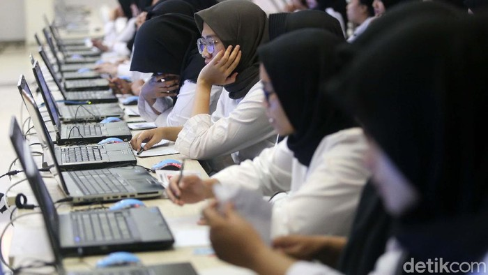

Ini Alasan 714 CPNS Kemendiktisaintek Mundur

Jakarta - Kementerian Pendidikan Tinggi, Sains dan Teknologi (Kemendiktisaintek)
membeberkan sejumlah alasan di balik langkah pengunduran diri sebanyak 714 orang Calon Pegawai
Negeri Sipil (CPNS) dosen 2024 di kementeriannya. Alasannya beragam, salah satunya ialah menyangkut
ekspektasi terkait lokasi penempatan CPNS nantinya.
Kabar menyangkut pengunduran diri 714 peserta tersebut mulanya diketahui publik lewat unggahan salah
satu akun media sosial X, @ardi*****. Disebutkan bahwa ada 653 peserta mengundurkan diri dan 61 peserta
yang dianggap mengundurkan diri karena tidak mengisi daftar riwayat hidup.
Sekretaris Jenderal (Sekjen) Kemendiktisaintek Togar Mangihut Simatupang mengonfirmasi kebenaran kabar
tersebut. Katanya, salah satu alasan pengunduran diri tersebut ialah menyangkut ekspektasi terkait lokasi penugasan.
"Penugasan penempatan yang berbeda dengan ekspektasi, berkaitan dengan alasan lokasi, alasan kesehatan,
alasan keluarga, dan alasan PT," terang Sekretaris Jenderal (Sekjen) Kemendiktisaintek Togar Mangihut Simatupang
saat dihubungi detikcom, Selasa (15/4/2025).
Togar mengatakan, tidak ada sanksi secara formal yang diberlakukan untuk para peserta yang mengundurkan diri ini.
Namun demikian, ada kemungkinan bahwa para peserta ini bisa diblokir dari CPNS yang akan datang.
"Sanksi secara formal tidak didefinisikan. Tetapi karena sudah merugikan proses yang menutup ribuan calon lain yang
sudah siap sedia ditempatkan di mana saja dan ketidakmauan ditempatkan di mana pun di seluruh Indonesia, ada kemungkinan
akan diblok," jelasnya lagi. Pemberitahuan tentang pengunduran diri 714 peserta CPNS ini tercantum dalam Pengumuman
Nomor: 5590/A.A3//KP.01.01/2025 tentang pembatalan kelulusan pada seleksi penerimaan CPNS Kemendiktisaintek. Dengan langkah
pengunduran diri ini, para CPNS dibatalkan status kelulusannya dan dinyatakan Tidak Memenuhi Syarat.
Adapun daftar peserta yang mengundurkan diri ini dapat dilihat melalui laman resmi Kemendiktsaintek https://casn.kemendikdasmen.go.id/.
Lihat Artikel Sebelumnya
Kembali ke Home Page